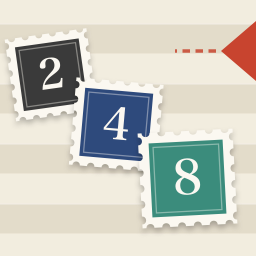

出る所が見える倍々数字パズル
次の札と、入ってくる口が先に分かる。運ではなく、読みで遊ぶ倍々の数字パズル。
盤を上下左右にすべらせると、切手がそろって動き、同じ数の切手がぶつかると1枚になって倍になります（2→4→8→…→2048→…）。切手帳の台紙のような盤に、目打ちのある切手が並びます。
- 出る所が見える。新しい切手はランダムな所に出ません。「次の札」に出ている数（2か4）が、すべらせた向きの反対の端の、その番号の口（盤の縁の朱の三角）から入ります。ふさがっていれば、となりの口へ。「その次」の札も見えます
- はなすまで決まらない先読み。指をすべらせている間は、動かしたあとの盤と、新しい切手が入るマスがうすく見えます。指をはなすと決まり、もとの所へもどせば取り消せます
- 振り返りと打ち直し。終わったあと、1手目からの盤を目盛りでたどれます。いちばん大きい切手が角を離れた手には印。どの手のあとからでも打ち直せます
- 同じ札の順でもう一度。札の順は「札順」の番号で決まります。同じ番号なら同じ切手が同じ口から入ります。日付で決まる「きょうの札順」もあります
- もどすは何回でも無料。盤は 3×3・4×4・5×5。音は出しません（振動は切れます）
- 登録・課金はありません。記録はこの端末の中だけに保存します。画面のいちばん下に小さな広告が出ます（画面いっぱいの広告・動画の広告は出しません）